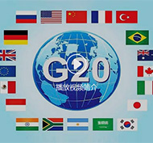
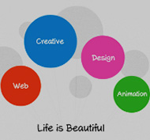
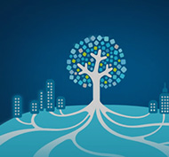
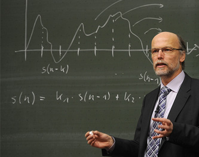

康奈尔大学——你的第一所无国界、无围墙的顶尖学府Online
让你“优质课程随时学、藤校学分闯世界”
.png)
由世界顶级师资所打造的优质在线学分课程
-
.png)
你的专属学分，完成后获可得康奈尔大学学分和官方成绩单
.png)
专业化团队管理，与教授大咖的互动不在遥不可及
-
.png)
一个专为中国高中生和大学生设计的康奈尔大学在线课程
学术计划
CCCP目前所提供的六门在线课程，因其节奏紧张要求严格，具有挑战性，学生对此要有准备。通过学习，学生不仅获得学术知识，大幅提高英语水准，并且会逐渐适应美国常春藤盟校的教学风格与学习方式。我们要求学生参与所有讲座，完成所有作业，并且积极参加课堂讨论。
每门在线课程的讲座约需至少37.5个小时，对于每小时在线讲座，学生都需规划2到3个小时去完成作业，这意味着大多数课程约需150个小时的学习时间（或者以15 周为1个学期，每周至少花10小时学习）。 课程所在网站和教授会清晰的布置作业、测试、安排论文及其它作业。CCCP的学生将会接受与康奈尔大学本科生相同的学术标准与评估。
课程所在网站和教授会清晰的布置作业、测试、安排论文及其它作业。CCCP的学生将会接受与康奈尔大学本科生相同的学术标准与评估。
课程介绍
《国际关系概论》
课程学分（4学分）国际关系概论注重以批判和分析性的思维方式，考察国际政治中的基本概念和实践。课程将对国家与个体层面的一系列安全问题进行检验与探讨。课程专题包括未来战争、恐怖主义、全球经济、民族主义、种族和宗教冲突、及传媒在塑造国际关系中的角色。此外，学生还将学习不同视角或理论如何导致对世界的不同理解。
 课程主页《全球与创业者对话》
课程学分（3学分）本课程旨在为有志创业的学生提供更丰富的价值与经历。来自于不同背景的嘉宾们将分享他们的经验，展现创业生涯的挑战和收益。课程将向希望在企业中追求职业理想的学生以及想要自主创业的学生阐述具有创业头脑以及创业思维对职业生涯发展的重要性。这一课程将通过互动分享、创业实践活动、对话采访、反思研讨、创业生涯规划，以及一次创业旅行项目来达到教学目标。
 课程主页《领导力－行动中的团队和领导者》
课程学分（3学分）“行动中的团队和领导者”探讨卓越的领导者的领导者过去和现在的思维和行为模式，为培养你在日益复杂、相互关联和多样化的世界里建立卓越领导力做好准备。我们将历史案例研究与企业界、军界、竞技界和探险考察界的当代领导力理论和实践相结合分析。课程结束时，你会掌握更有效的倾听和交流技巧、学习处理团队中的紧张和冲突、建立团队多样性和统一性，并制定和执行计划以实现团队目标。最为重要的是，你会对作为团队成员和领导者同样充满信心，并做好准备尽你所能去施展影响力。
课程主页《可持续性发展与社区：公民生态学导论》
课程学分（3学分）这一课程探索环境治理给个体、社区以及环境所带来的效益，例如社区园艺、溪流保护、植树造林以及移除入侵物种，如何帮助社区重建被战争、自然灾害、犯罪，污染摧毁的家园。同时讨论社会生态系统、恢复力、自然、人与社区和谐相处的当代学术流派。你将通过讨论和视频会议与康奈尔大学相关教员和学生进行互动。教师和学生之间将通过视频会议互动，讨论；学生将分成小组参与社区生态开发的实践。
 课程主页《宏观经济学入门》
课程学分（3学分）宏观经济学概论将介绍宏观经济学理论的基础工具，着重分析与经济水平，稳定性，国家收入增长相关的总体经济活动。同时也将讨论经济模型、生产可能性边界、需求与供给、国际收入核算、总输出量的决定因素、失业率、通货膨胀、收支平衡、赤字以及经济增长等各类问题，以及这些问题如何受货币，财政及其它政策影响。此课程包括每次45分钟的网络授课时间、常规作业、练习考试、讨论组，两次初级测试和期末考试。
课程主页《学习和思考：大学成功的关键》
课程学分（非学分课程）这一课程探讨学习的关键方法，以及这些方法的实际应用。该课程将重点评估学生的强项和短板，帮助学生制定取得优异成绩所需的新策略。学生将学习如何准备有效的大学入学申请论文，和诸如记笔记、测试准备、时间管理、有效阅读、以及基于最新的生物学和心理学研究的批判性思维等学习技巧。这一课程同样以定期45分钟同步交互式远程讨论为特征来指导学生学习。
课程主页康奈尔大学与中国的渊源
康奈尔大学于1865年创立伊始，就树立了其风格独具的办学理念——致力于成为一个“任何人在任何领域都能得到指导”的高等学府。一个多世纪以来，康奈尔大学与中国建立了坚实互惠的合作关系。
做为最早入读的中国学子之一，胡适先生就曾在1914年毕业于康奈尔大学。
本着教育创新的精神，康奈尔大学继续教育与暑期课程学院于2005年成为第一个招收中国高中生参加暑期学分课程的美国顶尖研究型大学。
现在，康奈尔大学又与中国教育国际交流协会联手，筹备在中国开设在线项目，来进一步支持中国学生的学术目标，并共同邀请感兴趣的高中生和大学生参加。
康奈尔大学中国项目（CCCP）概述
康奈尔大学中国项目(CCCP)旨在为中国学生将来在美国求学打下坚实的基础。本项目所包含的课程为康大本科正式课程，由优秀的康大教授和讲师在线执教。这个项目与康大春季学期同步进行。自2016年1月至5月期间，学生可根据自己的时间自主安排学习。
学生可以在教授与研究生助教的工作时间与其互动，并在每个学期有两次实时的网络会谈。康大主管人员也将定期访问中国以督促学生和学校的学习进度和质量。
项目中的五门课程均为学分课程，学生完成后会获得康奈尔大学的学分及官方成绩单。第六门课程为非学分课程，旨在为学生在大学学习成功做准备。结束后学生将获得康奈尔大学的官方成绩单，达标与否的成绩会列入康奈尔大学的官方成绩单。
